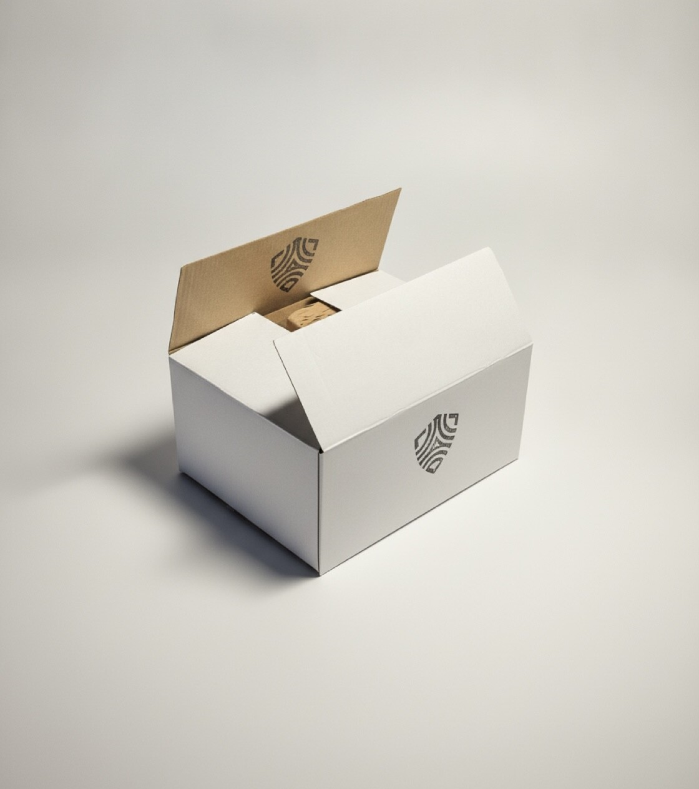
Welcome to AntiHunter. This node is a self-contained WiFi, Bluetooth and LoRa mesh sensor. It runs everything on the device: no cloud, no account, no server needed. It is fully open source. Read the firmware, write your own mesh commands, wire it into your own IDS. Make it yours.
This guide takes you from opening the box to a tuned node in the field, whichever tier you bought. Sections that only apply to one tier are marked. Everything else applies to every node.
1. Regulated 5 V only. Power the PCB from USB, a bench supply set to 5 V, a proper DC-DC regulator, or the UPS board. Never connect 18650 batteries, a battery pack, or a vehicle supply directly to the PCB. Unregulated input permanently damages the modules. Voltages under 4.5 V cause instability.
2. Never power the LoRa radio without its antenna. Transmitting into an open port can destroy the radio's PA. Fit the LoRa antenna, or the U.FL pigtail plus antenna, before the node is energised.
3. One USB cable at a time. The ESP32 and the Meshtastic radio share the PCB's power rails. With both USB ports plugged in, one board back-feeds the other. Plug in one board, do your work, unplug it, then plug in the other.
| Tier | What is in the box | What you still have to do |
|---|---|---|
| 1 · Fully Assembled Unit | Built, soldered, tested and ready to deploy. 8 GB SD card fitted. Active GPS helix antenna. SMA antennas. Meshtastic flashed on the radio with the serial link configured. | Fit two flat-top 18650 batteries, screw on the antennas (§2), flash AntiHunter (§5), set the radio region and channel (§7). |
| 2 · Complete Parts Kit | Every part on the bill of materials, unassembled, as it comes from the supplier. Passive GPS antenna. Nothing is soldered and nothing is flashed. | Solder and assemble it (§3), flash Meshtastic on the radio (§7.1), then flash AntiHunter (§5) and configure. |
| 3 · Populated PCB | A fully assembled PCB. Core modules soldered, bench-tested, 8 GB SD card fitted. Factory U.FL antennas. Meshtastic flashed on the radio with the serial link configured. | Attach the antennas (§2), supply power over USB or 18650s, build the housing if you want one, flash AntiHunter (§5), set the radio region and channel (§7). |
| 4 · Bare PCB | One 82 mm board, unpopulated. | Source the BOM, solder the modules, flash Meshtastic on the radio, fit an SD card, then follow this guide from §3. |
On the Fully Assembled Unit and the Populated PCB, the Meshtastic radio ships flashed with the latest stable firmware and the serial link to the node already configured: TEXTMSG mode, 115200 baud, on the correct pins for the board. The screen is also set to blank after one second and the status LED is off, so a dark radio on first power-up is expected, not a fault. You do not need to redo that. You do still need to set your LoRa region and create your own encrypted channel. See §7.
On the Complete Parts Kit and the Bare PCB you flash the radio yourself first. §7.1 has the settings. The ESP32 ships empty on every tier, so you always flash AntiHunter yourself and know exactly what is on it.
Open the box on a clean, static-safe surface. Check what arrived against your tier before you power anything.
Every part needed to build a finished node. Nothing is soldered and nothing is flashed. You supply two flat-top 18650 batteries, an active SMA GPS antenna and soldering tools.
A fully assembled PCB, bench-tested, on its factory antennas. No enclosure and no power source.
Everything else comes from the bill of materials in Appendix B, including the Meshtastic radio, which you flash yourself.
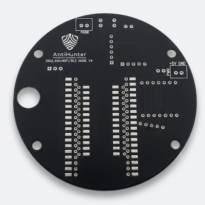
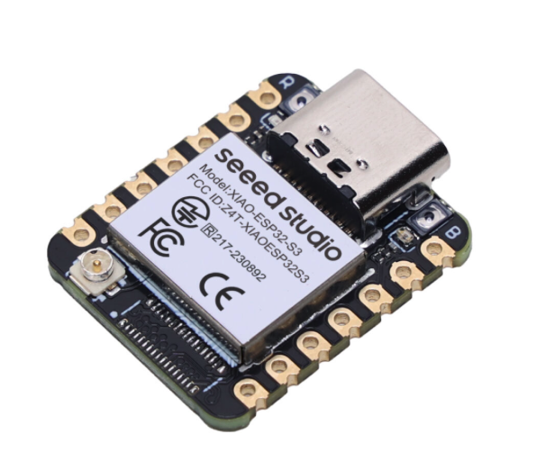
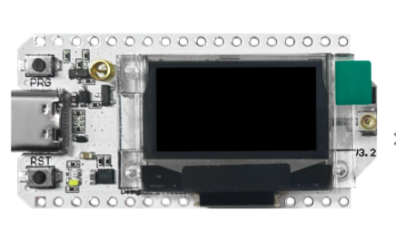
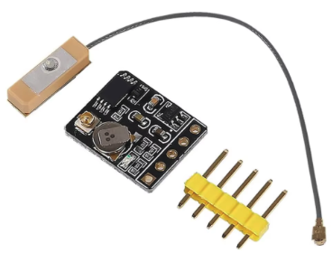
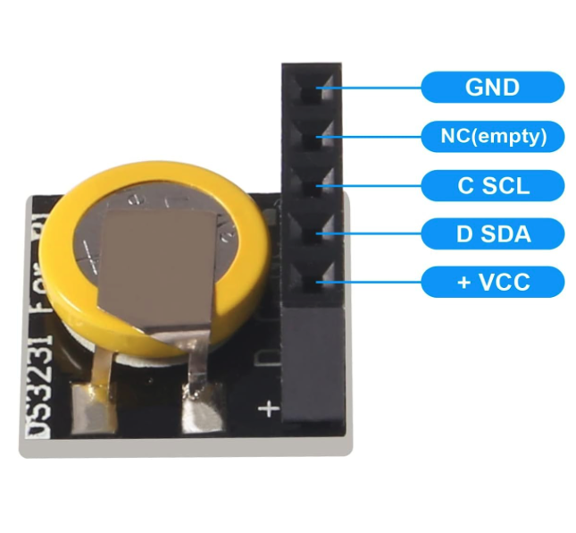
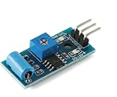
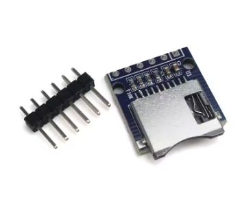
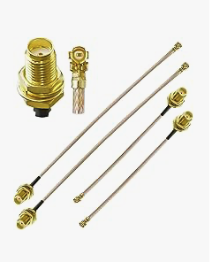
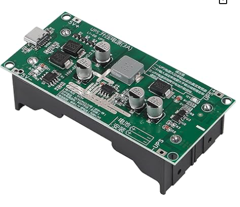
The node draws roughly 160 mA idle and 600 mA while actively scanning. Inside the enclosure the UPS board provides the regulated 5 V and the batteries are never connected to the PCB directly. Outside the enclosure, use a USB-C adapter, a bench supply set to 5.0 V on the 5 V input, or a proper DC-DC regulator.
Do not connect batteries directly to the PCB. Do not exceed 5 V. Do not use unregulated sources. A fuse in the battery line is recommended, a 2 A fast-blow in series with the switch wiring, but one is not supplied with any tier.
The ESP32 runs warm under load and the GPS module gets noticeably hot while it searches for satellites. Both are normal. Neither the fan nor the thermal switch is required for the node to work.
The short version of the whole guide. Each step names the section that covers it in full.
More nodes are damaged fitting antennas than in any other step. The U.FL connectors are small, fragile and unforgiving of a crooked press. Take your time here.
| Antenna | U.FL set (tiers 2 and 3) | SMA set (tiers 1 and 2) | Connects to |
|---|---|---|---|
| 2.4 GHz WiFi / BLE | Flat black film antenna, printed 2.4G | Shorter of the two rubber ducks, 6 dBi | The U.FL socket on the XIAO ESP32-S3, or its SMA bulkhead |
| LoRa (region specific) | Coiled black whip | Longer duck, marked 868 MHz (EU), 915 MHz (US) or 923 MHz (Asia) | The U.FL socket on the Heltec / T114 radio, or its SMA bulkhead |
| GPS | Passive ceramic patch, supplied with the GPS module | Active helix, Fully Assembled Unit only | The U.FL socket on the GPS module, or the SMA bulkhead in the battery housing |
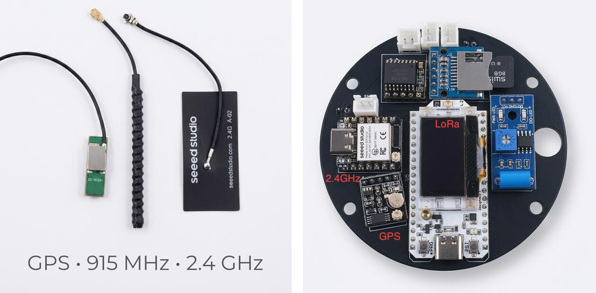
On an enclosed build, decide which bulkhead carries LoRa and which carries WiFi, then wire every node you build the same way. It does not matter which you choose. It matters that a spare antenna always fits the port you expect in the field.
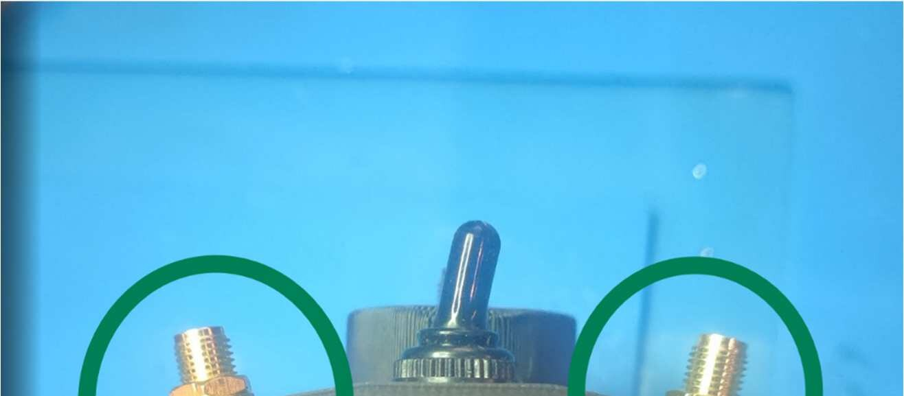
When you build more than one node, use the same antenna type and the same cable length on all of them. Triangulation and any other multi-node distance estimate assumes the nodes hear the world the same way. Mismatched antennas skew the result.
The pigtail's tiny snap connector mates with the socket on each module. It seats with an audible, tactile click.
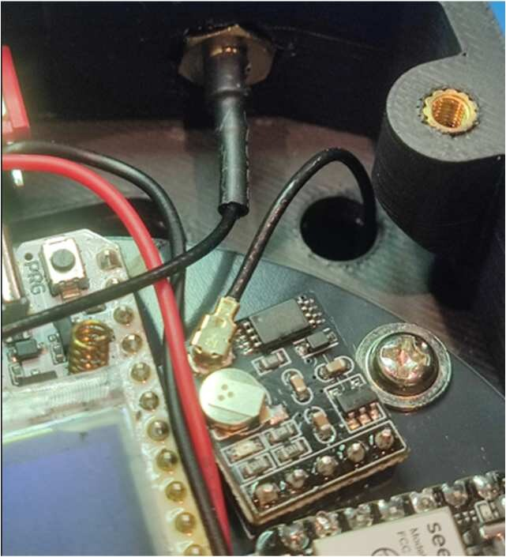
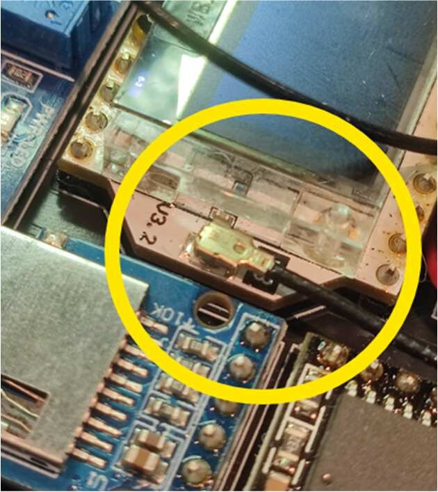
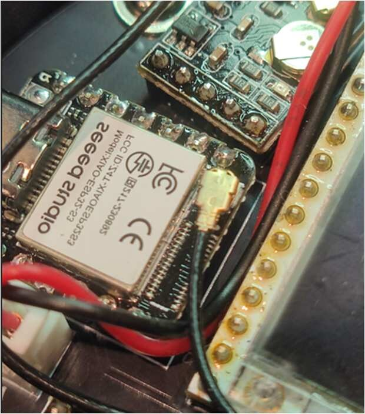
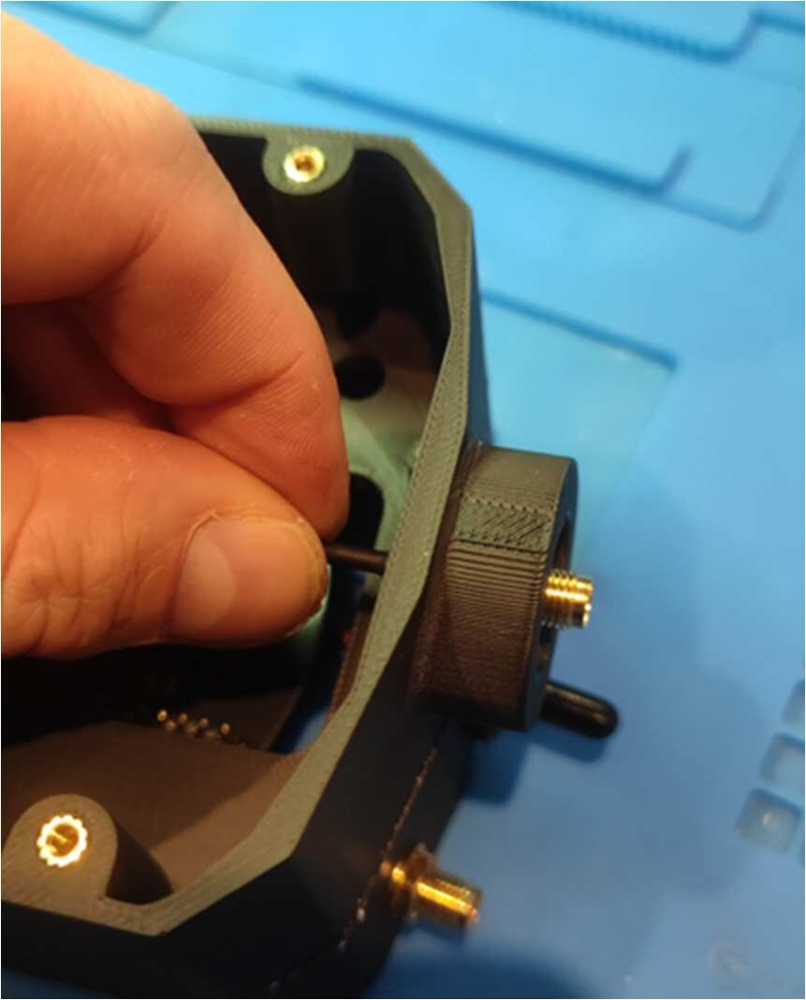
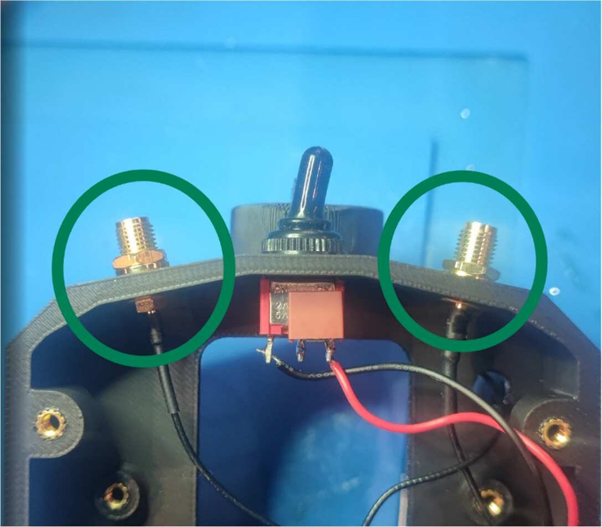
A smear of silicone grease on the SMA threads and on the TPU seals keeps water out and makes the antennas easier to remove later.
Tiers 1 and 3 arrive soldered. Skip to §4.
The Complete Parts Kit and the Bare PCB are built with the illustrated assembly manual, which covers soldering, connectors, the enclosure, the SD card and the power wiring in photographed steps. This guide does not repeat it.
hw/Prototype_STL_Files/Antihunter-DIGINODE-AssemblyManual.pdf
github.com/lukeswitz/AntiHunter, in the hw folder
Work through it end to end, then come back here at §4 to power the node up for the first time.
Covered on page 6 of the assembly manual. Do both before anything is soldered to the board.
RTC module. Ships with female headers. Trim and reuse the existing pins, or desolder them and fit males.
Vibration sensor. Some units ship with inverted 90° headers. Bend them straight, reheat the joints, push through and trim the excess, or desolder and replace with standard pins.
Connect a USB-C cable to the ESP32 only, remembering one USB at a time, and open a serial monitor at 115200 baud. On boot the firmware prints its banner and version, then the results of its hardware checks: SD card, GPS, RTC, vibration sensor. Any module that failed to initialize says so by name.
If you flashed the Full firmware, a WiFi access point named Antihunter also appears within a few seconds.
Every subsystem reports into the diagnostics text, visible in the web UI's System tab, over serial, and in the reply to a mesh STATUS command. Check for:
Nothing to do. The DS3231 is set when you flash the firmware, and GPS disciplines it again on every fix. Its coin cell keeps it running across power cycles. All timestamps in this system are UTC.
Flash the firmware first (§5), then set the clock and configure the radio. A fresh flash with "Erase Device" ticked clears saved settings, so do it before you spend time configuring.
The ESP32 ships empty on every tier. You choose the build and put it on yourself.
Same firmware, same detectors, same mesh commands, same scan engine. The difference is whether the node hosts a WiFi access point.
| Full | Headless | |
|---|---|---|
| Control | Web UI and HTTP API over its own AP, plus serial and mesh | Serial and mesh only |
| RF footprint | The AP beacons continuously, so the node is discoverable as a WiFi network | Never beacons |
| Results | Rendered as cards in the web UI's Results tab, and served plain over the API like every other endpoint. Written to the SD card as well | Written to /last_results.txt on the SD card |
| Logging | Identical. Both builds write results, the probe database, vibration events, sentinel incidents and scan logs to the SD card | |
| Device database | /devicedb.jsonl, which is what the Data Explorer browses | Not written |
| Best for | Bench work, first setup, anything where you want the UI | Covert and long-term field deployments |
Start with Full while you learn the device. Reflash to Headless before a quiet deployment. It takes two minutes and your settings live on the SD card.
| Channel | Source | Use it when |
|---|---|---|
| Stable | main branch | Default. Field deployments. |
| Beta | beta branch | New features first, with the risk that implies. |
| Experimental | ESP32-C5 builds (2.4 + 5 GHz) and RadarNode | Only on C5 hardware. The flasher asks you to acknowledge these are test builds. |
Tick it when upgrading from firmware older than v0.9.2, or when you want to clear saved settings. Otherwise leave it off. Settings persist in NVS and are mirrored to the SD card, and self-heal if they are corrupted.
curl -fsSL -o flashAntihunter.sh \ https://raw.githubusercontent.com/lukeswitz/AntiHunter/main/Dist/flashAntihunter.sh chmod +x flashAntihunter.sh ./flashAntihunter.sh
The script asks for a release channel, then Full or Headless. Flags: -c configure device parameters during the flash, -e erase flash first, -l list available firmware.
git clone https://github.com/lukeswitz/AntiHunter.git cd AntiHunter pio device list # find the port pio run -e AntiHunter-full -t upload # web UI build pio run -e AntiHunter-headless -t upload # serial + mesh build pio device monitor -e AntiHunter-full # watch it boot pio run -e AntiHunter-full -t erase -t upload # clean flash
Environments: AntiHunter-full and AntiHunter-headless for the ESP32-S3; AntiHunter-c5-full and AntiHunter-c5-headless for the ESP32-C5 on the feat/c5 branch; RadarNode-c5 for the 24 GHz radar node.
The default AP name and password are published in the documentation. Until you change them in RF Settings, treat the node as an open door. §8.1.
The XIAO ESP32-C5 is a drop-in replacement for the S3 on the same board, with the same pads and peripherals, and it adds 5 GHz scanning. Those builds are in testing and live under the flasher's Experimental channel. The RadarNode variant pairs a 24 GHz radar with the same mesh: it detects a moving target, then sweeps WiFi and BLE to record which devices were present at that moment.
Firmware is built and published by CI when a release is tagged. The web flasher always serves the current build for the channel you pick, so re-running the flasher is the update. Nothing on the node phones home or updates itself.
Discussions and issues on the same repository are where behavior changes, hardware alternatives and field reports get talked through.
Settings live in NVS and are mirrored to the SD card, so they normally survive an update. Watchlists, results and databases live on the SD card and are untouched by flashing.
Flash the other channel, or check out an earlier tag and build from source with PlatformIO. If a downgrade behaves strangely, erase and flash clean, then reconfigure.
Run one firmware version across a mesh. Mixed versions can differ in the mesh message formats they emit and what your Command Center is able to parse.
The LoRa mesh gives you long-range control and alerting with no infrastructure. It is entirely optional, since a single node works standalone, but it is what turns several nodes into a system.
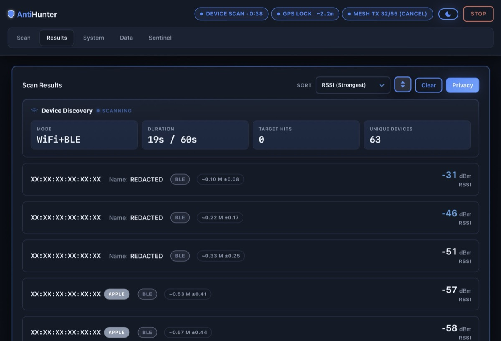
Tiers 1 and 3: already done. On the Fully Assembled Unit and the Populated PCB the radio arrives on the latest stable Meshtastic with the serial link to the node set: TEXTMSG mode, 115200 baud, on the right pins for the board (19 RX / 20 TX on Heltec V3, 10 RX / 9 TX on T114). The screen is set to blank after 1 s and the status LED is off. Verify it if you like; do not redo it.
Tiers 2 and 4: you flash it. The Complete Parts Kit and the Bare PCB include no flashed firmware at all. Connect the Heltec V3.2 (preferred) or T114 on its own USB and flash the latest stable Meshtastic from flasher.meshtastic.org. Then set the serial module, either in the Meshtastic app or web client, or with the script in §7.2:
| Setting | Value |
|---|---|
| Serial module | Enabled |
| Mode | TEXTMSG |
| Baud | 115200 |
| Pins, Heltec V3 | 19 RX / 20 TX |
| Pins, T114 | 10 RX / 9 TX |
Without this the node and the radio cannot talk, and no mesh command will ever reach the node.
The LoRa region is not set at the factory, and an UNSET region makes the radio receive-only: it hears the mesh but never transmits. Set the region for the country you are in. It determines the frequency band and the legal power and duty-cycle limits.
Plug the radio in on its own USB, not the ESP32, and run:
pip3 install 'meshtastic[cli]' pyserial python3 scripts/meshtastic_config.py
With no arguments it prints the current settings and opens an interactive menu. Non-interactive equivalent:
python3 scripts/meshtastic_config.py --serial on --board heltec-v3 \
--screen off --led off --ble off --region US
| Option | What it does |
|---|---|
| --port | Serial port, auto-detected if omitted |
| --board heltec-v3 | t114 | Sets the serial-module pins for your board |
| --region | LoRa region, e.g. US. UNSET means receive only |
| --serial on | off | The node link: TEXTMSG at 115200 on the board's pins |
| --screen on | off | SECS | off blanks after 1 s, or give a timeout in seconds |
| --led on | off | Status LED heartbeat |
| --ble on | off | Bluetooth radio |
| --pin NNNNNN | none | random | BLE pairing: fixed 6-digit PIN, none, or random |
The same settings can be applied from the Meshtastic phone app or web client if you prefer.
Meshtastic ships with a public default channel whose key is published. Anything you send on it, commands, detections and coordinates alike, is readable by anyone in radio range running stock firmware. Before you deploy:
A node left on the default channel broadcasts its detections, its position and its command traffic to anyone listening. Changing the channel is the single most important mesh setting you will touch.
Commands and detections are ordinary Meshtastic text messages, so anything that talks to the mesh talks to your nodes:
These are Meshtastic features. Nothing AntiHunter-specific is needed on the receiving end.
Ten minutes on the bench before the node ever leaves the building.
Presets set the whole timing profile in one click. Start on Balanced.
| Preset | WiFi chan time | WiFi scan int | BLE scan int | BLE scan dur | RSSI | Use case |
|---|---|---|---|---|---|---|
| Relaxed | 300 ms | 5000 ms | 6000 ms | 3000 ms | −80 dBm | Low power |
| Balanced | 160 ms | 3000 ms | 4000 ms | 2000 ms | −95 dBm | General use (default) |
| Aggressive | 110 ms | 1500 ms | 2000 ms | 1000 ms | −100 dBm | Fast detection, high coverage |
| Custom | User-defined | Fine-tuned | ||||
WiFi and BLE share a single 2.4 GHz radio and the scan loop is single-threaded. A BLE scan holds the radio for its full duration, and WiFi capture is off-air for that time. BLE scan duration is literally the fraction of each cycle WiFi is dark. The presets split it evenly by setting BLE duration to half the BLE interval.
Configuration is written to NVS on the ESP32 and mirrored to the SD card, so it survives reboots and normal reflashes, and self-heals if a copy is corrupted. Ticking Erase Device at flash time wipes NVS deliberately.
Every capability runs on the node itself and reports to the web UI, the mesh and the Command Center alike. One scan mode runs at a time.
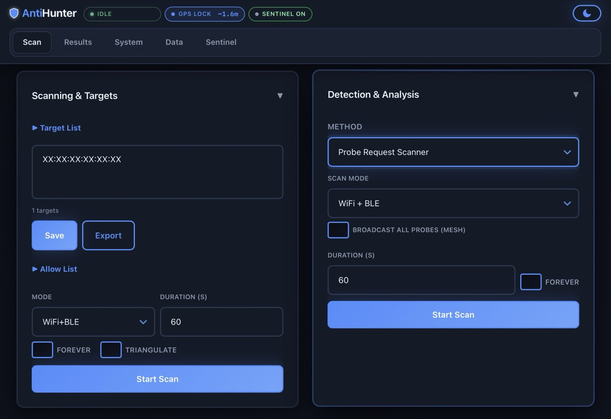
A watchlist scan. Load MAC addresses, OUI prefixes, the first three bytes of a MAC so a whole vendor, or SSIDs, and get an instant mesh alert when one is seen.
@ALL CONFIG_TARGETS:AA:BB:CC:DD:EE:FF|11:22:33|MyNetwork
@ALL SCAN_START:2:300:1..11 # mode 0=WiFi 1=BLE 2=both : seconds : channels
Alert: NODE: Target: TYPE MAC RSSI:dBm [Name:name] [GPS=lat,lon]
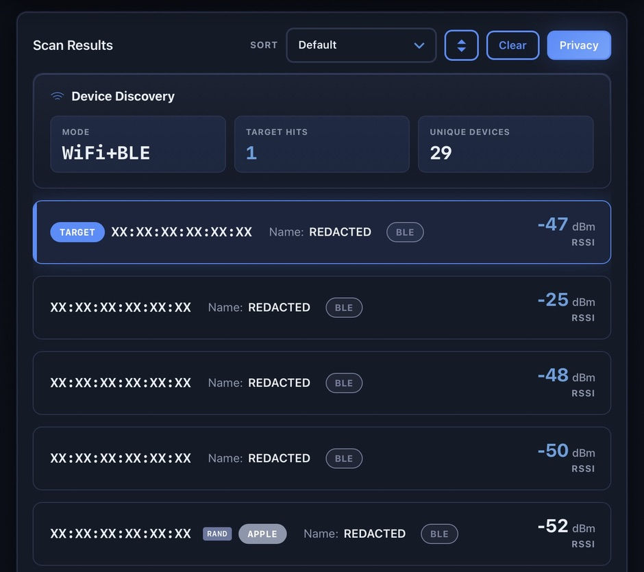
Captures everything nearby, WiFi and BLE, with RSSI, channel and names. This is your baseline survey tool. Run it first at any new site to see what normal looks like.
@ALL DEVICE_SCAN_START:2:300:+PROBE # +PROBE also fills the probe database
Passive sniffing of the probe requests devices emit while looking for networks they know. It reveals the SSIDs a device is searching for, which is often more identifying than the device itself.
@ALL PROBE_START:2:300:+ALL # +ALL broadcasts every probe, not just watchlist hits
Hits: NODE: PROBE_HIT MAC [Randomized|Vendor] RSSI=dBm CH=N [SSID="net" [GHOST]]
Ghost SSID detection flags a probed SSID with no matching AP responding nearby: a network the device remembers but that is not here.
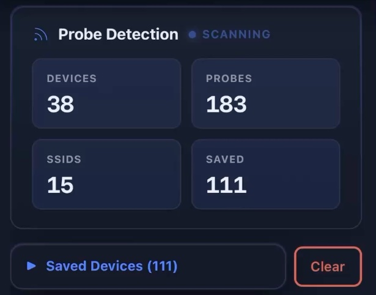
Learn, then alert. The node observes a site for a set period and records what belongs there. Afterwards it reports what is new, what has gone, and what has changed signal.
@ALL BASELINE_START:300 # minimum 60s; add :FOREVER to run indefinitely
@ALL BASELINE_STATUS
Alerts: ANOMALY-NEW, ANOMALY-RETURN, ANOMALY-RSSI, DEVICE_DISAPPEARED.
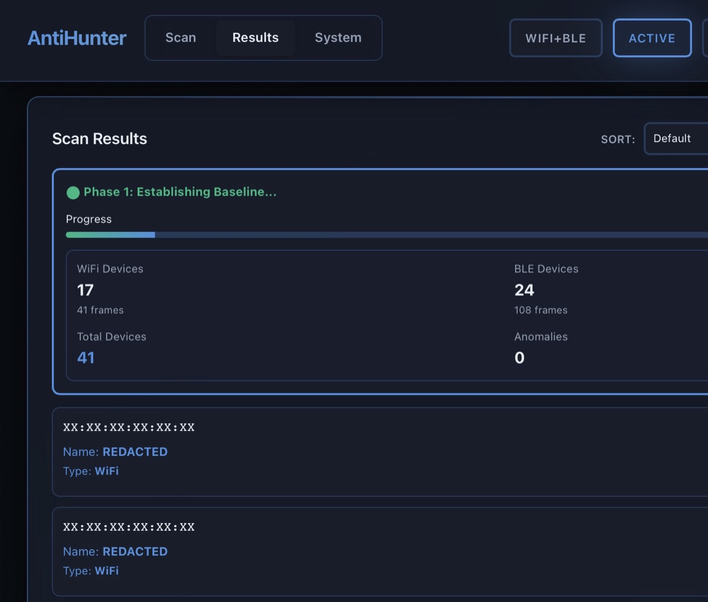
Modern phones rotate their MAC address to defeat tracking. This mode links rotating MACs back to one persistent identity using behavioral signatures, and reports the identity rather than the address.
@ALL RANDOMIZATION_START:2:300
Emits IDENTITY: messages. Treat the output as an investigative lead, not proof. This is an experimental mode.
Real-time detection of deauthentication and disassociation frames, with the source tracked.
@ALL DEAUTH_START:300
Alert: NODE: ATTACK: DEAUTH|DISASSOC [BROADCAST|TARGETED] SRC:MAC DST:MAC RSSI:dBm CH:N R:reason. The IEEE reason code is reported as context only: codes 1, 2, 6 and 7 all occur in normal traffic, so the firmware does not use the code to decide whether a frame is an attack.
Passive detection of attacker tooling, not just attacks: deauth, beacon, auth and association floods, SAE denial of service, karma and evil-twin access points, probe floods, and handshake or PMKID capture attempts. Where a frame carries a recognisable template, Sentinel names the tool behind it.
@ALL SENTINEL_ON @ALL SENTINEL_MODE:scan # hop the configured channels @ALL SENTINEL_BOOT:1 # start automatically on boot @ALL GROUP:dos:on # enable a detector group @AH01 SENTINEL_STATUS @AH01 INCIDENTS:50 # dump the incident log to serial
| Group | Detectors |
|---|---|
| dos | eviltwin, sae, assoc_sleep |
| rogue | eviltwin, owe, karma |
| recon | pmkid, probe_flood, hshk |
| physical | frag, tsf, jam |
| mesh | mesh_guard |
| all | every member above |
Deauth, beacon and auth detection are always on and have no toggle. SENTINEL_MODE:defend pins one channel. On Headless there is no AP to pin to, so use scan. Sentinel is WiFi only. BLE and drone detection are separate modes.
Karma bait is the only part of the firmware that transmits: a probe request every 8 seconds to bait a karma AP into responding. It is off by default. Enable it deliberately with GROUP:rogue:on and only where transmitting is appropriate.
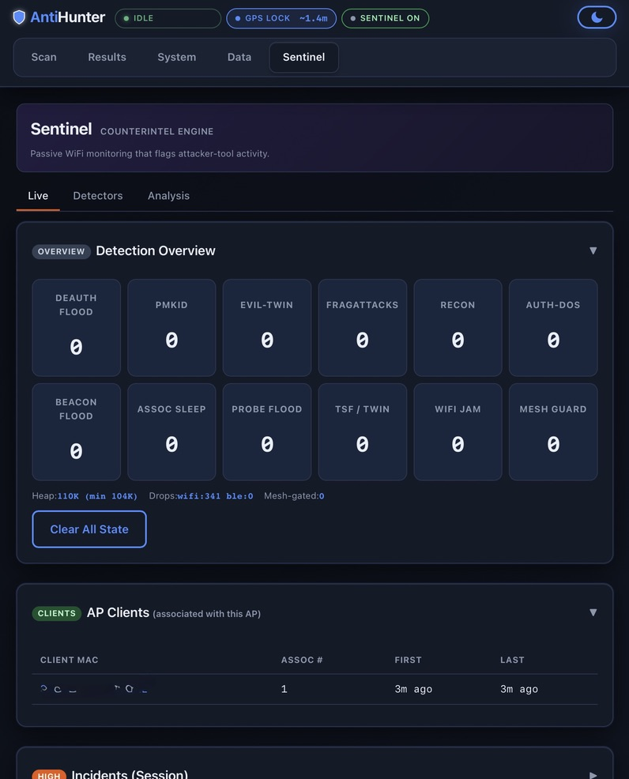
The On confirmed attack panel picks what runs when a detector confirms an attack with a source MAC: triangulate, packet capture, device discovery, probe sweep, drone RID, each with its own duration. Only one can hold the radio, so several ticked run in that order, one at a time, as it frees up. The queue is dropped after 15 minutes if the radio never frees.
Same panel sets the auto-capture budget. Captures made this way are auto_ files, pruned oldest-first to stay inside the budget and keep the card's free-space floor. Manual captures are never touched.
Detection pauses for the duration of each action. On a site that trips often, keep the durations short.
Identifies drones broadcasting Remote ID (ODID / ASTM F3411, and French ID) over both WiFi beacon/NAN and BLE. Reports the serial or CAA registration, position, altitude and speed, and the operator's location when the aircraft broadcasts it.
@ALL DRONE_START:300
DRONE: is sent once per appearance. A drone that stays in range is not re-announced. DRONE_LOST: follows 120 s after the last beacon.
Several nodes each report RSSI for one target MAC, and the coordinator fits a position from the set. Needs at least three nodes with valid GPS fixes and matched antennas.
@AH01 TRIANGULATE_START:AA:BB:CC:DD:EE:FF:60:2:1.0:1.0 @AH01 TRIANGULATE_RESULTS @ALL TRIANGULATE_STOP
The environment argument sets the path-loss model: 0 open sky, 1 suburban, 2 indoor, 3 dense indoor, 4 industrial. Choosing the wrong one is the usual cause of a distance estimate that looks wrong. Results arrive as T_D: per-node data, T_F: the final fix with confidence and uncertainty, and T_C: complete, with a map link.
Records raw traffic to SD as a standard pcap. WiFi frames carry a full radiotap header with channel, rate and RSSI; BLE advertisements are written as link-layer PDUs, so Wireshark dissects them properly.
Scan tab, pick Packet Capture, set radio and duration, press Start Capture. Files land in /pcap and list under the button, each with a download and a delete.
@ALL PCAP_START:0:300:0 @ALL PCAP_STOP
Arguments are radio, seconds, band. Radio 0 WiFi, 1 BLE. Band 0 is 2.4 GHz, 1 is 5 GHz, 2 both; 5 GHz needs a C5. Advanced sets a channel list, dwell, and a management-frames-only filter.
A capture stops on its own when the file reaches 100 MB, when free space drops below the floor, or when the card stops accepting writes. The mesh reply carries the reason: R=SIZECAP or R=WRITEFAIL.
A busy channel fills megabytes per minute. Check free space before a long run, and treat the file as a raw intercept.
FAT has no power-fail protection. Resetting or unplugging a node while a capture is writing can leave the card unreadable until it is reformatted, and the node then runs with no storage at all. Stop the capture first.
A node can rebuild its own card rather than waiting for someone with a card reader. Off by default, because rebuilding erases the card.
@ALL SD_REPAIR:ON @ALL SD_REPAIR:NOW @ALL SD_REPAIR:OFF
SD logs, exports and mesh alerts can all contain GPS coordinates. Review any file before you post it publicly or attach it to a report. Privacy Mode only redacts the live web UI.
The SW-420 is a mechanical vibration switch with a comparator and a trimpot on board. It has one job: pull its digital output high when movement exceeds the threshold the trimpot sets. That output goes to GPIO 2 on the ESP32, configured as a pull-down input with a rising-edge interrupt.
When it fires, the firmware:
Alerts are rate-limited to one every 3 seconds, so continuous shaking produces a steady trickle rather than a flood. The System diagnostics show Vibration sensor: Standby or Vibration sensor: Active - Last: TIME (Ns ago).
Turn alerts on and off with @AH01 VIBRATION_ON and VIBRATION_OFF, or the toggle in the web UI's Sensor Alerts card. VIBRATION_STATUS reports the current state.
The trimpot is the small brass screw on the sensor module. It sets the sensitivity threshold, and the correct setting depends entirely on where the node is mounted. A pole in the wind is not a shelf indoors. Tune it after the node is in its final position, not on the bench.
Movement can start a scan automatically. This suits a node used as a trip sensor rather than a continuous monitor.
@AH01 VIBSCAN_SET:1:2:60:60 # enable : mode : duration s : cooldown s
@AH01 VIBSCAN_STATUS
| Mode | Scan started | Mode | Scan started |
|---|---|---|---|
| 0 | None | 4 | List scan (targets) |
| 1 | All-device scan | 5 | Drone / Remote ID |
| 2 | Probe-request detect | 6 | Deauth (blue team) |
| 3 | Randomized-MAC detect | 7 | Baseline anomaly |
| 8 | Packet capture to SD |
Duration 0 means run until stopped. The trigger is skipped if a scan is already running or the node is in battery saver. Mode 8 writes an auto_ capture, which is subject to the auto-capture budget rather than kept forever.
The node can destroy its own data when it is moved. This is off by default, and it is permanent and irreversible.
| Parameter | Range | What it does |
|---|---|---|
| Setup delay | 30 s to 10 min | Grace period after arming, so installing the node does not wipe it |
| Vibrations required | 2 to 5, default 3 | How many movement events count as tampering |
| Detection window | 10 to 60 s | The period those events must fall within |
| Erase delay | 10 to 300 s | Countdown before destruction, your window to cancel |
| Cooldown | 5 to 60 min | Minimum time between tamper attempts, to blunt false triggers |
@AH01 AUTOERASE_ENABLE:60:30:3:30:300 # setup:erase:vibs:window:cooldown @AH01 AUTOERASE_STATUS @AH01 AUTOERASE_DISABLE @AH01 ERASE_CANCEL # abort a running countdown
During the setup period the node still reports movement, so you can watch the arming from a distance: VIBRATION: Movement in setup mode (active in Ns). When it triggers you get TAMPER_DETECTED: Auto-erase in Xs.
Two steps, so a single stray message cannot wipe a node. Request a token, then use it. The token expires in five minutes and is specific to that device.
@AH01 ERASE_REQUEST @AH01 ERASE_FORCE:AH_12345678_87654321_00001234
After a wipe the node plants a dummy IoT weather configuration in place of its own, so a recovered device does not obviously read as a sensor.
@AH01 FACTORY_RESET:FULL:yourEraseKey # FULL | CONFIG | DATA
Single node only, and it requires the erase PSK you set in §8.1. Without a PSK set, there is no credential to authorize it.
Test your settings with a node that holds nothing you care about. A wipe cannot be undone, and the countdown is short by design.
Send these as ordinary text messages from the Meshtastic app, a Command Center, or any client on your channel. @ALL broadcasts. A node ID targets one node. All times UTC.
| Command | Description |
|---|---|
| STATUS | Mode, scan state, hits, temperature, uptime, GPS |
| STOP | Stop all operations, flush pending mesh transmissions |
| Command | Does | Parameters |
|---|---|---|
| CONFIG_TARGETS | Set the watchlist | Pipe-delimited MACs, OUIs or SSIDs |
| CONFIG_NODEID | Rename the node | 2 to 5 alphanumeric characters |
| CONFIG_RSSI | Set the RSSI floor | −128 to −10 |
| CONFIG_CHANNELS | Set the channels to sweep | List or range, e.g. 1..11 |
| CONFIG_BAND | Pick the band, C5 only | 0 = 2.4 GHz, 1 = 5 GHz, 2 = both |
| CONFIG_DEDUP_TTL | Set cross-scan MAC dedup | 0 to 3600 s, 0 disables |
| CONFIG_SESSION_DEDUP | Toggle per-session dedup | 0 or 1 |
| MESH_DEDUP_CLEAR | Clear the dedup cache | None |
| CONFIG_ERASE_PSK | Set the key that authorizes a wipe | 1 to 64 characters |
| Command | Does | Parameters |
|---|---|---|
| SCAN_START | Hunt the watchlist | mode:secs:channels[:FOREVER] |
| DEVICE_SCAN_START | List everything in range | mode:secs[:FOREVER[:+PROBE]] |
| PROBE_START and PROBE_STOP | Collect probe requests | mode:secs[:FOREVER][:+ALL] |
| BASELINE_START and BASELINE_STATUS | Learn the area, then flag changes | duration[:FOREVER], min 60 s |
| DRONE_START | Watch for drone Remote ID | secs[:FOREVER] |
| DEAUTH_START | Watch for deauth attacks | secs[:FOREVER] |
| RANDOMIZATION_START | Link randomized MACs to devices | mode:secs[:FOREVER] |
| PCAP_START and PCAP_STOP | Record traffic to SD as pcap | radio:secs:band[:FOREVER] |
| TRIANGULATE_START | Locate a MAC across nodes | target:duration[:rfEnv[:wifiPwr:blePwr]] |
| TRIANGULATE_RESULTS and TRIANGULATE_STOP | Report the fix, or stop | None |
Mode is 0 WiFi, 1 BLE, 2 both. PCAP radio 0 WiFi / 1 BLE; band is 2.4 GHz on this build.
| Command | Does | Parameters |
|---|---|---|
| SENTINEL_ON, SENTINEL_OFF, SENTINEL_STATUS | Start, stop, report | None |
| SENTINEL_MODE | Pin a channel or hop | defend or scan |
| SENTINEL_BOOT | Auto-start at power-on | 1 or 0 |
| GROUP | Toggle a detector group | <dos|rogue|recon|physical|mesh|all>:<on|off> |
| DETECT_CFG and DETECT_CFG_GET | Set or dump detector tunables | JSON, 180 characters or fewer |
| INCIDENTS and INCIDENTS_CLEAR | Dump or clear the incident log | [:1-200] |
| ATTACKER_TRILAT and ATTACKER_TRILAT_STATUS | Triangulate a confirmed attacker, or report the setting | 1 or 0, off by default |
| Command | Does | Parameters |
|---|---|---|
| ERASE_REQUEST, ERASE_FORCE, ERASE_CANCEL | Wipe the node, challenge flow | Token flow, §10.4 |
| AUTOERASE_ENABLE | Wipe if the node is moved | setup:erase:vibs:window:cooldown |
| AUTOERASE_DISABLE and AUTOERASE_STATUS | Turn that off, or report it | None |
| VIBRATION_ON, VIBRATION_OFF, VIBRATION_STATUS | Enable, disable, report the sensor | None |
| VIBSCAN_SET and VIBSCAN_STATUS | Start a scan when moved | en:mode:dur[:cooldown] |
| FACTORY_RESET | Reset one node, needs the key | <FULL|CONFIG|DATA>:<erase PSK> |
| BATTERY_SAVER_START | Drop to low power | Minutes, 1 to 30, default 5 |
| BATTERY_SAVER_STOP and BATTERY_SAVER_STATUS | Return to normal, or report | None |
| HB_ON, HB_OFF, HB_INTERVAL | Periodic status broadcast, off by default | Interval 1 to 60 min |
@ALL STATUS # who is alive, and what are they doing @ALL STOP # stop everything, everywhere @AH01 CONFIG_NODEID:GATE1 # name a node @ALL CONFIG_TARGETS:AA:BB:CC|MyWiFi # set the watchlist @ALL SCAN_START:2:600:1..11 # 10 min watchlist scan, WiFi + BLE @ALL DEVICE_SCAN_START:2:300 # survey everything nearby @ALL BASELINE_START:900 # learn the site for 15 min @ALL SENTINEL_ON # attacker-tool detection @ALL DRONE_START:0 # drone watch until stopped @AH01 BATTERY_SAVER_START:10 # idle a node without losing the mesh
One node needs no server. A fleet benefits from one: AntiHunter Command & Control PRO aggregates every node's detections onto a live map, with TAK, MQTT and ADS-B integration and a Sentinel console.
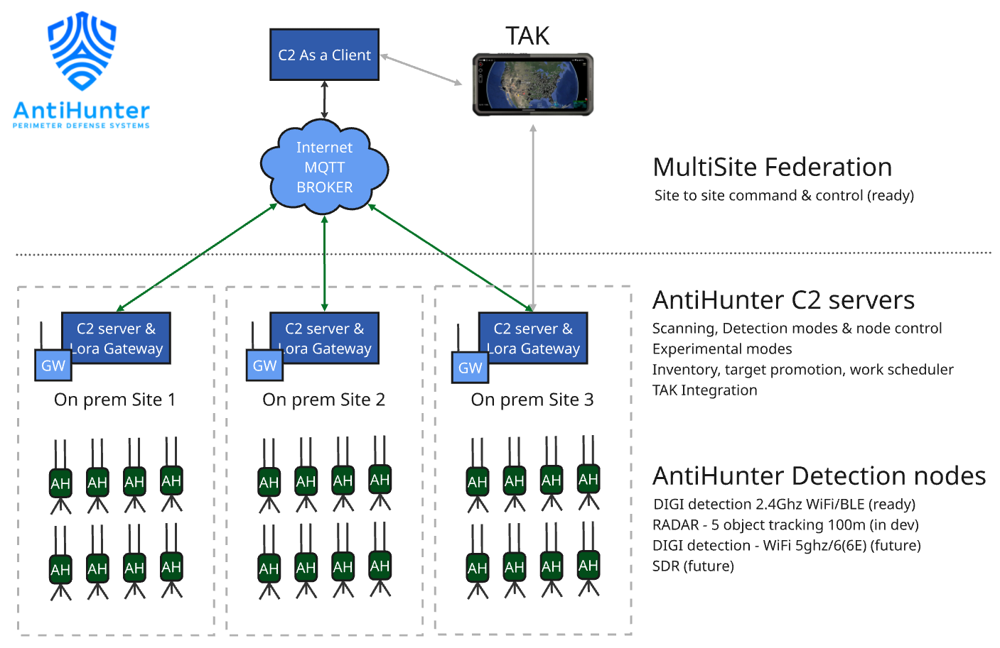
curl -o setup-local.sh \ https://raw.githubusercontent.com/TheRealSirHaXalot/AntiHunter-Command-Control-PRO/main/scripts/setup-local.sh chmod +x setup-local.sh ./setup-local.sh
Run it as a normal user, not with sudo. It asks for sudo itself when it needs it. It installs the prerequisites, clones the project, sets up the database, runs the migrations and seeds an admin login. When it finishes, open http://localhost:5173 and log in with the credentials it printed.
winget install -e --id Git.Git --accept-package-agreements --accept-source-agreements
cd $HOME git clone https://github.com/TheRealSirHaXalot/AntiHunter-Command-Control-PRO.git cd AntiHunter-Command-Control-PRO powershell -ExecutionPolicy Bypass -File scripts\setup-windows.ps1
Needs Docker 25 or newer. If you have no serial adapter at /dev/ttyUSB0, which is every macOS and Windows host, comment out the devices: and group_add: lines under the backend service first, or the container will not start.
git clone https://github.com/TheRealSirHaXalot/AntiHunter-Command-Control-PRO.git cd AntiHunter-Command-Control-PRO docker compose up -d --build
Three containers come up: Postgres, the backend on port 3000, and the frontend on http://localhost:8080. The seeded admin defaults to admin@example.com and admin. Logs: docker compose logs -f backend. Stop: docker compose down, adding --volumes to delete the database too.
The seeded credentials are published in the documentation. Change them at first login, before the server is reachable by anything but you. Enable two-factor authentication and HTTPS if the instance will be reached across a network, and work through the hardening checklist in the project README.
Use the in-app update page, or git pull in the project folder. Docker: git pull && docker compose up -d --build. The backend re-applies migrations on boot.
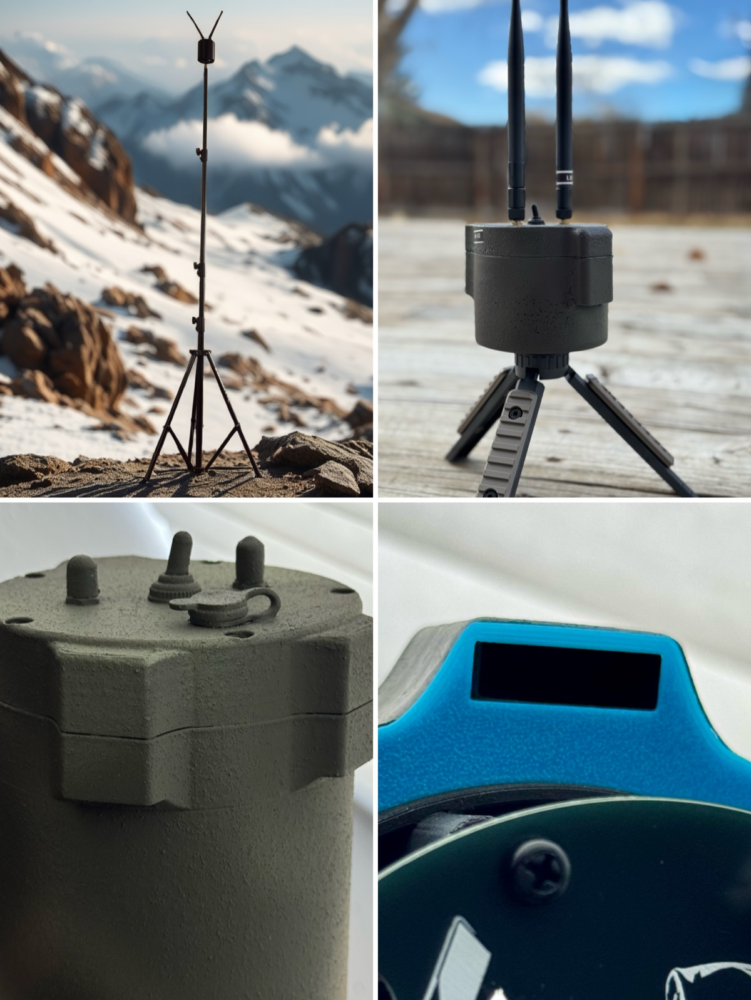
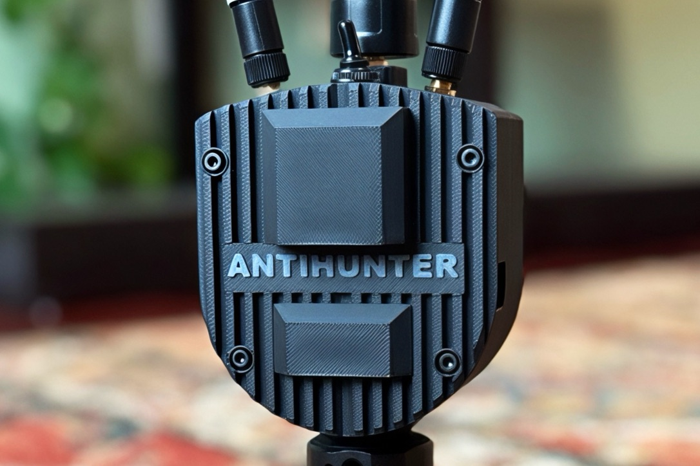
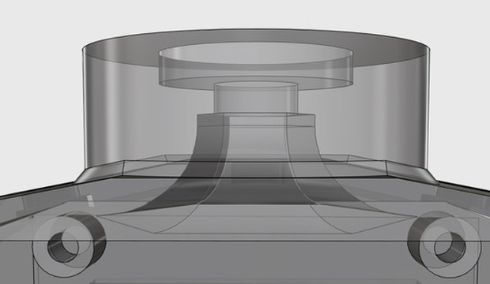
| Symptom | Likely cause | What to do |
|---|---|---|
| No Antihunter WiFi network | Headless firmware flashed, or the AP name and password were changed | Check over serial which build is running. Reflash Full if you need the UI. |
| Web UI will not load | Not connected to the node's own AP, or using https | Join the node's AP, then open http://192.168.4.1 exactly. |
| Flashing fails or the port never appears | Charge-only USB cable, a serial monitor still holding the port, both USB ports connected, or the wrong browser | Use a data cable, close other serial tools, unplug the radio, use Chrome or Edge. |
| SD card not detected | Not FAT32, a 32 GB or larger card, or not seated | Reformat FAT32 on a card under 32 GB. Reseating means opening the enclosure. |
| No GPS fix | Antenna not connected, or no view of the sky | Check the U.FL or SMA connection, move outdoors, give it time. The module runs hot while searching, which is normal. |
| Nothing arrives over the mesh | Region UNSET so the radio is receive-only, serial module off, wrong pins for the board, or nodes on different channels or keys | Re-run meshtastic_config.py and print the settings. Confirm every node carries the same channel. |
| Node hears commands but never answers | Region unset on that node, so it cannot transmit | Set its region. |
| Constant vibration alerts | Trimpot too sensitive, or a resonant mount | Retune in place (§10.2), pad the mount. |
| Vibration never fires | Trimpot too insensitive, or a bad joint on the sensor header | Retune, check the diagnostics line and the solder joints. |
| Node scans forever | A scan was started with :FOREVER or duration 0 | @ALL STOP, or the Stop button in the UI. |
| Settings gone after flashing | Erase Device was ticked | Reconfigure. Settings mirror to the SD card and self-heal, but a deliberate erase clears NVS. |
| Node hot to the touch | Normal under sustained scanning | Fit the fan and thermal switch, ventilate the enclosure, consider a relaxed preset. |
| Detections with no coordinates | No valid GPS fix at the time | Expected behavior. Position is only attached when the fix is valid. |
| Weak GPS, LoRa or WiFi signal | The SMA joint on the pigtail is loose. Some pigtails are two-piece and the connector screws onto the bulkhead, and they ship loose from the factory | Hold the bulkhead and tighten the pigtail's SMA joint, then re-check the U.FL end and the antenna. Check every pigtail, not only the one that looks wrong. |
Issues and Discussions at github.com/lukeswitz/AntiHunter. A useful report includes: firmware build and channel, Full or Headless, board type, what you did, what you expected, what happened, and the serial output around the failure. Scrub coordinates and MAC addresses from anything you paste. See §15.
AntiHunter is distributed for lawful, authorised defensive use only: security research, blue-team training, compliant monitoring, event security and network auditing. Operate it only on infrastructure, networks, devices, spectrum and datasets you own or have explicit written permission to assess. The detection, correlation and triangulation features exist to characterise an environment you are authorised to assess, not to identify, follow or profile people. Targeted surveillance, stalking, harassment and tracking individuals without informed consent are prohibited.
You are responsible for every rule governing radio use where you operate: FCC Part 15 and Part 97, CE/RED, Ofcom and their national equivalents; ISM band allocations, power limits and duty cycles; and any licensing conditions for your class of operation. LoRa is region-locked, 868 MHz EU, 915 MHz US, 923 MHz Asia, and running a region outside the one you are in may be unlawful. Never use the node to cause harmful interference.
Passive reception of radio emissions is regulated separately from network access in most jurisdictions. Capturing, storing, decoding or disclosing frame contents and identifiers may engage the US Wiretap Act and ECPA, state two-party-consent statutes, the UK Investigatory Powers Act or equivalents. Determine the lawfulness of each capture mode where you are before enabling it.
MAC addresses, probe request contents, BLE advertisements and Remote ID broadcasts may be personal data under GDPR, UK GDPR, CCPA/CPRA and similar regimes. Collect only with a lawful basis, minimise what you keep, set a retention and destruction schedule, and honour data-subject rights. The maintainers never receive, process or host your data.
Receiving broadcast Remote ID is permitted in most places. Using that data to locate, approach, confront or interfere with an aircraft or its operator may violate aviation, harassment or anti-stalking law, including 18 U.S.C. § 32. Reception is not authorisation to act.
Kits, bare boards and assembled units are supplied for people competent in electronics assembly and operation. Correct assembly, ESD control, antenna selection and attachment, and supply of regulated 5 V power are your responsibility. Operating the transceiver without a properly matched antenna can damage the hardware. Lithium cells are never supplied. Sourcing, protection, charging, storage, transport and disposal are yours, and carry fire and injury risk. The hardware is not certified for and must not be used in life-safety, medical, aviation, automotive or industrial-control applications. It is not a substitute for a certified security or alarm system, and its output is advisory only, subject to false positives and false negatives.
Modes marked beta or experimental, including Sentinel, Triangulation and MAC Randomization Correlation, are unvalidated, may produce inaccurate or misleading output, and must not be relied on for operational, evidentiary, investigative or safety decisions.
THE PROJECT, INCLUDING SOFTWARE, FIRMWARE, HARDWARE DESIGNS AND DOCUMENTATION, IS PROVIDED "AS IS" AND "AS AVAILABLE", WITHOUT WARRANTY OF ANY KIND, EXPRESS OR IMPLIED, INCLUDING WARRANTIES OF MERCHANTABILITY, FITNESS FOR A PARTICULAR PURPOSE, TITLE, NON-INFRINGEMENT, ACCURACY, DETECTION EFFICACY OR UNINTERRUPTED OPERATION. This supplements and does not limit the warranty disclaimer and liability limitation in sections 15 to 17 of the GNU Affero General Public License v3.0.
TO THE MAXIMUM EXTENT PERMITTED BY LAW, THE AUTHORS, DEVELOPERS, MAINTAINERS AND CONTRIBUTORS SHALL NOT BE LIABLE FOR ANY DIRECT, INDIRECT, INCIDENTAL, SPECIAL, EXEMPLARY, PUNITIVE OR CONSEQUENTIAL DAMAGES, including loss of data, profits, goodwill, equipment or business interruption, or damages arising from failure to detect, false detection, or regulatory enforcement action, ARISING FROM OR RELATED TO YOUR USE OF THE PROJECT, EVEN IF ADVISED OF THE POSSIBILITY. Where liability cannot be fully disclaimed, total aggregate liability shall not exceed the greater of the amount paid for the unit giving rise to the claim, or USD $0.
Assembly, sale or instruction by the maintainers creates no warranty, no certification, no fitness-for-purpose representation and no responsibility for how a unit is later configured, deployed or used. Once the unit is in your hands, operation and compliance are yours alone. Flashing the firmware, by web flasher, shell script or any other means, is acceptance of these terms.
Nothing here excludes liability that cannot lawfully be excluded, including for death or personal injury caused by negligence, for fraud, or non-excludable statutory consumer rights. Some jurisdictions do not allow the exclusion of implied warranties or the limitation of incidental or consequential damages, so parts of the above may not apply to you.
You alone are responsible for ensuring your build, deployment and operation comply with all applicable laws, regulations, licences, permits, equipment authorisations, organisational policies and third-party rights. If you do not agree to these terms, do not build, flash, assemble, deploy or operate AntiHunter.
Full text: Legal Disclaimer in the project README. Firmware is licensed under the GNU AGPL v3.0. Hardware and documentation are licensed as stated in their own files.
XIAO ESP32-S3 on the DIGI NODE board. Pin assignments may change with board revisions. Verify against your revision.
| Function | GPIO | Notes |
|---|---|---|
| Vibration sensor | 2 | SW-420 tamper detection, rising-edge interrupt, input pull-down |
| RTC SDA | 3 | DS3231 I²C data |
| RTC SCL | 6 | DS3231 I²C clock |
| GPS RX | 44 | NMEA in |
| GPS TX | 43 | Unused |
| SD CS | 1 | Chip select |
| SD SCK | 7 | SPI clock |
| SD MISO | 8 | SPI MISO |
| SD MOSI | 9 | SPI MOSI |
| Mesh RX | 4 | From the Meshtastic radio |
| Mesh TX | 5 | To the Meshtastic radio |
Radio side: serial module in TEXTMSG mode at 115200 baud, pins 19 RX / 20 TX on Heltec V3, 10 RX / 9 TX on T114.
Part links and photographs: hw/Prototype_STL_Files/BOM-Links.md
| Item | Default | |
|---|---|---|
| WiFi AP name | Antihunter | change it |
| WiFi AP password | antihunt3r123 | change it |
| WiFi AP hidden | off, SSID beacons | optional, see §8.1 before turning it on |
| Web UI | http://192.168.4.1 | Full firmware only |
| Erase PSK | not set | set it if using erase or factory reset |
| Meshtastic serial | TEXTMSG, 115200 | pre-configured on tiers 1 and 3, you set it on 2 and 4 |
| LoRa region | UNSET, receive only | set it |
| Meshtastic channel | public default | replace with your own encrypted channel |
| Scan preset | Balanced | |
| WiFi channels | 1 to 11 | |
| Mesh dedup TTL | 300 s | 0 disables |
| Vibration alerts | enabled | rate-limited to one per 3 s |
| Vibrations required for tamper | 3 | range 2 to 5 |
| Auto-erase | disabled | |
| Heartbeat | disabled | |
| Karma bait | off | the only transmitting detector |
| Attacker auto-triangulation | off | |
| C2 frontend | http://localhost:5173, Docker 8080 | |
| C2 seeded admin | admin@example.com and admin | change at first login |
| Path | Contents |
|---|---|
| /last_results.txt | Most recent scan results as text. Written by both builds |
| /devicedb.jsonl | Device database. Full firmware only, browsed by the Data Explorer |
| /vibrations.jsonl | Structured vibration events |
| /pcap/wifi_*.pcap and /pcap/ble_*.pcap | Packet captures you started by hand. Never pruned automatically |
| /pcap/wifi_auto_*.pcap and /pcap/ble_auto_*.pcap | Captures started by a vibration trigger or a Sentinel attack response. Oldest are deleted to stay inside the budget and keep the card's free-space floor |
| BSSID | The MAC address of an access point. |
| OUI | The first three bytes of a MAC address, identifying the manufacturer. Watchlisting an OUI matches a whole vendor. |
| Probe request | A frame a device sends looking for networks it knows. Reveals remembered SSIDs. |
| Ghost SSID | A probed network with no matching AP responding nearby. |
| Evil twin | A rogue AP impersonating a legitimate network to capture clients. |
| Karma | An AP that answers every probe request, claiming to be whatever a client asks for. |
| Deauth | A management frame that disconnects a client. Used to force reconnections and capture handshakes. |
| PMKID | A value in the first EAPOL message that can be captured and cracked offline without a full handshake. |
| Remote ID | The broadcast identification a drone emits under ASTM F3411 and equivalent rules. |
| RSSI | Received signal strength, in dBm. Less negative is stronger. |
| NVS | Non-volatile storage on the ESP32 where settings persist across reboots. |
| SoftAP | The WiFi access point the Full firmware hosts for its web UI. |
| U.FL / IPX | The miniature snap-on RF connector on each module. |
Print this page and keep it with the node.
| Web UI | http://192.168.4.1, AP Antihunter |
| Web flasher | lukeswitz.github.io/AntiHunter |
| Firmware, docs, issues | github.com/lukeswitz/AntiHunter |
| Command Center | github.com/TheRealSirHaXalot/AntiHunter-Command-Control-PRO |
| Meshtastic flasher | flasher.meshtastic.org |
@ALL STATUS who is alive @ALL STOP stop everything @AH01 CONFIG_NODEID:GATE1 name a node @ALL CONFIG_TARGETS:AA:BB:CC|MyWiFi set the watchlist @ALL SCAN_START:2:600:1..11 watchlist scan, 10 min @ALL DEVICE_SCAN_START:2:300 survey everything @ALL BASELINE_START:900 learn the site @ALL SENTINEL_ON attacker-tool detection @ALL DRONE_START:0 drone watch until stopped @AH01 BATTERY_SAVER_START:10 idle, mesh stays up
AntiHunter DIGI NODE Operator's Guide · revision 1.0 · 14 August 2026
Open source under the GNU AGPL v3.0 · github.com/lukeswitz/AntiHunter